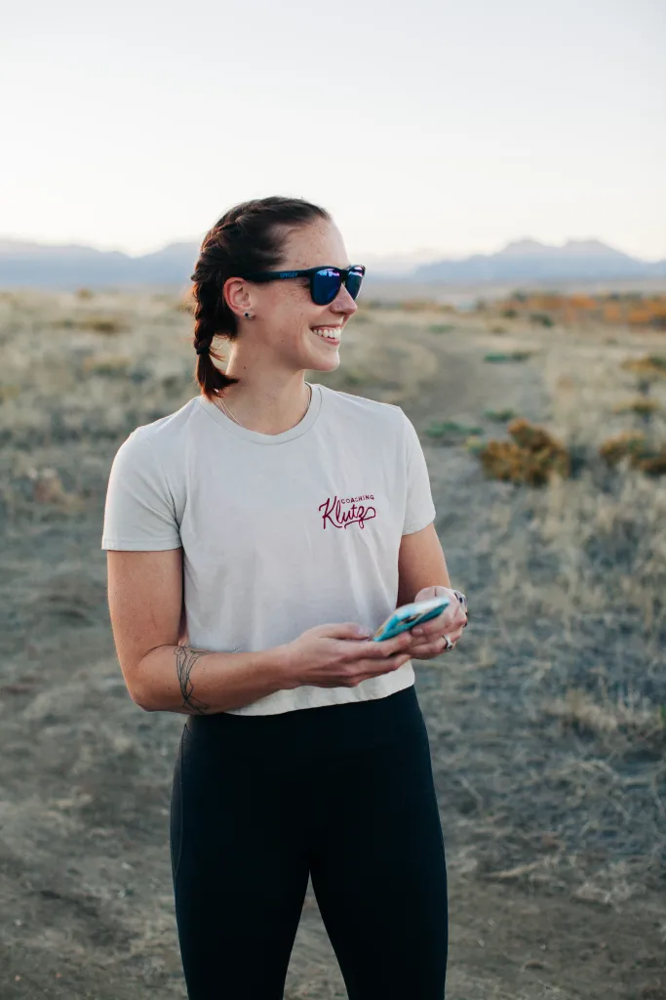

Looking for a run coach who works with competitive mid to back of the packers? I gotchu.
I’m THRILLED you made it to my corner of the internet.
Here’s the thing: You’ve got a ton of choices when it comes to run coaches. But if you’re looking for someone who cares about you as a whole human, has created a supportive community of other runners, and can get you results, your search ends with me.
Over the years, 50+ runners have trusted me to help them reach their dreams, and I would be over the moon to join you on your running journey too.
Hi, I’m Kelly!
I’m a certified run coach (road and ultras) and certified strength and conditioning specialist (CSCS) based in Arvada, CO. I have a passion for helping women and LGBTQIA+ folks train sustainably so they can enjoy training while dreaming big and pushing their limits.
I love working with competitive mid to back of the packers and first time trail or ultra athletes.Ready to run your first (or 50th) 50k? Ready to embrace being competitive? You’ll want me on your team.
